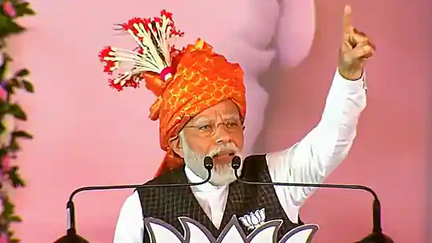

PM Modi mentioned the murder of a party worker as he accused the Congress of failing to control Naxal violence in Chhattisgarh.
Prime Minister Narendra Modi on Tuesday claimed that human and drug trafficking has increased in the Surguja district of Chhattisgarh under the rule of Congress. Addressing a public rally in Bishrampur, the top BJP leader also alleged that the Congress party has failed to control Naxal violence in the state as he mentioned the recent murder of a party worker.
"Whenever the Congress comes to power in the country, terrorists and Naxalites get emboldened. News of bomb blasts and murders are reported from here and there. Wherever the Congress is in power, the rule of crime and loot prevails there," he said.